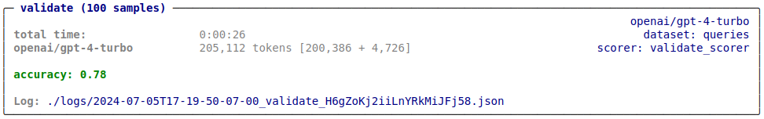
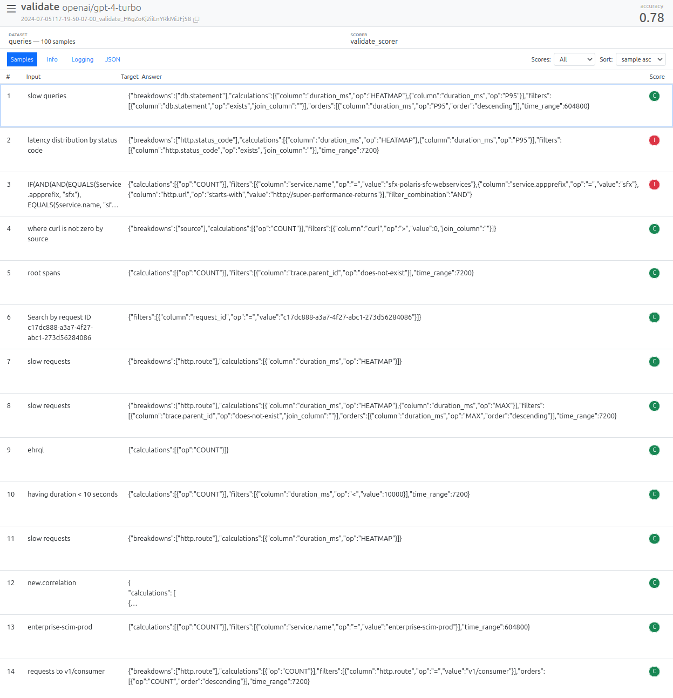
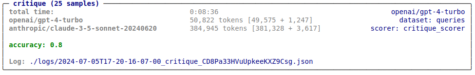
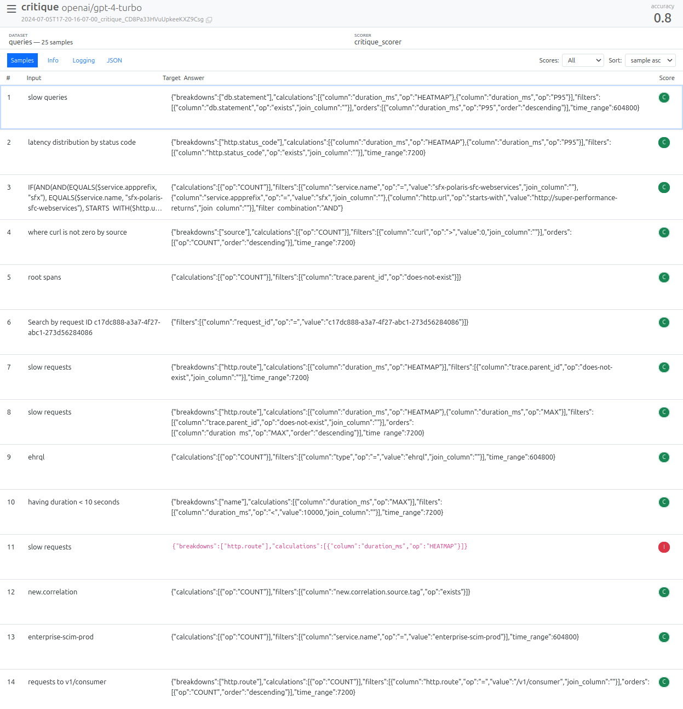

Conference Talk 4: Inspect - An OSS Framework for LLM Evals
notes
llms
In this talk, J.J. Allaire walks through the core concepts and design of the Inspect framework and demonstrate its use for a variety of evaluation tasks.
This post is part of the following series:
- Mastering LLMs Course Notes: My notes from the course Mastering LLMs: A Conference For Developers & Data Scientists by Hamel Husain and Dan Becker.
- Inspect AI: A Framework for Evaluating LLMs
- Hello World Example
- Core Concepts
- Honeycomb Dataset Example
- Composition
- Tool Use
- Agents and Tools
- Logging
- Models
- Workflow
- Q&A Session
Presentation Resources
- GitHub Repository: inspect-llm-workshop
- Slides: Intro to Inspect
Inspect AI: A Framework for Evaluating LLMs
- Inspect AI is a Python package for creating LLM evaluations developed through a collaboration between J.J. Allaire and the UK AI Safety Institute.
- Designed to address the limitations of existing evaluation tools for developing more complex evals.
- Focuses on providing a great experience for developing evals that can be reproducibly run at scale.
- Github Repository: UKGovernmentBEIS/inspect_ai
- Documentation: https://ukgovernmentbeis.github.io/inspect_ai
- Installation:
pip install inspect-ai
- VS Code Extension:
- Marketplace: Inspect AI
- Source Code: inspect-vscode
Hello World Example
- Documentation: Hello, Inspect
from inspect_ai import Task, eval, task
from inspect_ai.dataset import example_dataset
from inspect_ai.scorer import model_graded_fact
from inspect_ai.solver import (
chain_of_thought, generate, self_critique
)
@task
def theory_of_mind():
1 return Task(
dataset=example_dataset("theory_of_mind"),
plan=[
2 chain_of_thought(),
generate(),
self_critique()
],
3 scorer=model_graded_fact()
)- 1
-
The
Taskobject brings together the dataset, solvers, and scorer, and is then evaluated using a model. - 2
- In this example we are chaining together three standard solver components. It’s also possible to create a more complex custom solver that manages state and interactions internally.
- 3
- Since the output is likely to have pretty involved language, we use a model for scoring.
Core Concepts
- Dataset: List of inputs for the LLM
- Usually includes targets (e.g., correct answers)
- Solvers: Pipelines that execute the evaluation
- Includes functions that transform the dataset inputs, call the model, and act on the model output
- Can include things like prompt engineering and multi-turn dialogue
- Can be composed together as layers, or can be a single layer with higher internal complexity
- Scores: Evaluates the output of solvers
- Ranges from simple text comparisons to model-graded assessments using custom rubrics.
Honeycomb Dataset Example
- Jupyter Notebook: honeycomb/queries.ipynb
- Dataset: queries.csv
- ~2,300 example queries (along with per-query column schemas generated offline via RAG)
- Scoring Methods:
- validate: score using the validity checker: utils.py
- critique: score using the critique prompt: critique.txt
- Process:
- Load the dataset.
- Define a pipeline that includes prompt engineering, model calling, and evaluation.
- Apply a scoring function.
Dataset
- Documentation: Datasets
- Inspect uses a standard schema for Datasets
- We map the raw data into that schema when reading it
Note
- “columns” are saved as metadata so we can use them for prompt engineering
from inspect_ai.dataset import csv_dataset, FieldSpec
dataset = csv_dataset(
csv_file="queries.csv",
sample_fields=FieldSpec(input="user_input", metadata=["columns"]),
shuffle=True
)Solver
Documentation: Solver
Functions that manipulate the
TaskState(message history and model output) to perform actions like:- Calling the model to generate text.
- Engineering prompts.
- Applying critique mechanisms.
-
generate(): Calls the model, appends the assistant message, and updates the model outputchain_of_thought(): Basic chain-of-thought implementation.prompt_template(): Modifies the existing prompt by passing it through a templatemultiple_choice(): Handles multiple-choice questions, including shuffling options, calling the model, and unshuffling to determine the chosen answer.self_critique()- Performs self-critique by:
- Running a critique model on the initial output.
- Appending the critique to the message history.
- Calling the model again to generate a revised answer.
- Performs self-critique by:
Solver: prompt_with_schema()
- Simple prompt template that substitutes the user query and the RAG-generated column schema.
from inspect_ai.solver import solver
from inspect_ai.util import resource
@solver
def prompt_with_schema():
prompt_template = resource("prompt.txt")
async def solve(state, generate):
# build the prompt
state.user_prompt.text = prompt_template.replace(
"{{prompt}}", state.user_prompt.text
).replace(
"{{columns}}", state.metadata["columns"]
)
return state
return solveScorer
- Documentation: Scorer
- Evaluates whether solvers were successful in finding the right
outputfor thetargetdefined in the dataset, and in what measure - Pluggable (i.e. provided from other packages)
- Evaluates whether solvers were successful in finding the right
- Built-In Scorers:
- Pattern matching
- Template matching
- Model grading
- Human scoring
- Example: Math Benchmark with Expression Equivalence
- Source Code: benchmarks/mathematics.py
- Uses a custom scorer
expression_equivalanceto evaluate mathematical expressions for logical equivalence, accounting for variations in formatting or simplification. - Scorer:
expression_equivalance()- Extracts the model’s answer using regular expressions.
- Employs a few-shot prompting technique to train a model for assessing the equivalence of mathematical expressions.
- Code
@scorer(metrics=[accuracy(), bootstrap_std()]) def expression_equivalance(): async def score(state: TaskState, target: Target): # extract answer match = re.search(AnswerPattern.LINE, state.output.completion) if match: # ask the model to judge equivalance answer = match.group(1) prompt = EQUIVALANCE_TEMPLATE % ( {"expression1": target.text, "expression2": answer} ) result = await get_model().generate(prompt) # return the score correct = result.completion.lower() == "yes" return Score( value=CORRECT if correct else INCORRECT, answer=answer, explanation=state.output.completion, ) else: return Score( value=INCORRECT, explanation="Answer not found in model output: " + f"{state.output.completion}", ) return score
Scorer: validate_scorer()
- Extracts and cleans JSON output from the model.
- Calls the
is_valid()function with the column schema to determine if a valid query was generated.
from inspect_ai.scorer import accuracy, scorer, Score, CORRECT, INCORRECT
from utils import is_valid, json_completion
@scorer(metrics=[accuracy()])
def validate_scorer():
async def score(state, target):
# check for valid query
query = json_completion(state.output.completion)
if is_valid(query, state.metadata["columns"]):
value=CORRECT
else:
value=INCORRECT
# return score w/ query that was extracted
return Score(value=value, answer=query)
return score
Note
- The
json_completion()function takes care of some details around extracting JSON from a model completion (e.g. removing sorrounding backtick code block emitted by some models)
Validate Task
Task:- The basis for defining and running evaluations
- Parameterized with a dataset, a scorer, and metrics.
- May optionally provide a default plan for execution.
Honeycomb Eval: validate()
- Combines the dataset, solver, and scorer defined above into a
Task. - Uses a predefined system message and prompt template.
from inspect_ai import eval, task, Task
from inspect_ai.solver import system_message, generate
@task
def validate():
return Task(
dataset=dataset,
plan=[
system_message("Honeycomb AI suggests queries based on user input."),
prompt_with_schema(),
generate()
],
scorer=validate_scorer()
)- Run the
Taskusing Inspect’seval()function (limiting to 100 samples):
if __name__ == '__main__':
eval(validate, model="openai/gpt-4-turbo", limit=100)
Note
- The
__name__ == '__main__'conditional indicates that we only want to run this cell in interactive contexts.- Allows us to also use the notebook as a module callable from
inspect eval: $ inspect eval queries.ipynb@validate
- Allows us to also use the notebook as a module callable from
Eval View
inspect view- Example
$ inspect view Inspect view running at http://localhost:7575/
Provides an overview of evaluation results.
Allows drilling down into individual samples to examine message history, inputs, and model outputs for debugging.

Critique Task
- Documentation: Models
Scorer: critique_scorer()
- Allows using different models (e.g., GPT-4 Turbo) to critique the generated queries.
- Builds a critique prompt using a predefined template and the model’s output to have the critique model indicate whether the generated query is “good” or “bad”.
- Returns a score based on the critique model’s assessment.
import json
from inspect_ai.model import get_model
@scorer(metrics=[accuracy()])
def critique_scorer(model = "anthropic/claude-3-5-sonnet-20240620"):
async def score(state, target):
# build the critic prompt
query = state.output.completion.strip()
critic_prompt = resource("critique.txt").replace(
"{{prompt}}", state.user_prompt.text
).replace(
"{{columns}}", state.metadata["columns"]
).replace(
"{{query}}", query
)
# run the critique
result = await get_model(model).generate(critic_prompt)
try:
parsed = json.loads(json_completion(result.completion))
value = CORRECT if parsed["outcome"] == "good" else INCORRECT
explanation = parsed["critique"]
except (json.JSONDecodeError, KeyError):
value = INCORRECT
explanation = f"JSON parsing error:\n{result.completion}"
# return value and explanation (critique text)
return Score(value=value, explanation=explanation)
return scoreHoneycomb Eval: critique()
- Utilizes the same dataset and plan as
validate()but employs a critique model for scoring.
@task
def critique():
return Task(
dataset=dataset,
plan=[
system_message("Honeycomb AI suggests queries based on user input."),
prompt_with_schema(),
generate()
],
scorer=critique_scorer()
)- Run the task using
eval()(limiting to 25 samples):
if __name__ == '__main__':
eval(critique, model="openai/gpt-4-turbo", limit=25)
Critique Eval View
inspect view- Displays critique-based evaluation results.
- Provides insights into the critique model’s explanations for incorrect answers, aiding in prompt or model improvement.

Composition
- Inspect AI encourages composing evaluations by combining solvers and scorers from different sources.
- Custom solvers and scorers can be made available in a Python package to re-use across many evals.
Example: Jailbreaking with sheppard
sheppard: An internal package that integrates jailbreak solvers to elicit responses from models they might otherwise refuse to provide.Solver Description encode()Message obfuscation jailbreak pap_jailbreak()Persuasion Adversarial Prompt (PAP) payload_splitting()Payload splitting jailbreak cr_jailbreak()Content reinforcement - Example: Using sheppard to provide jailbreaks for a security eval:
from inspect_ai import Task, eval, task from inspect_ai.scorer import model_graded_fact from inspect_ai.solver import generate, system_message from sheppard import pap_jailbreak @task def security_guide(): return Task( dataset=example_dataset("security_guide"), plan=[ system_message("system.txt"), pap_jailbreak(), generate() ], scorer=model_graded_fact(model="openai/gpt-4"), )
Tool Use
- Documentation: Tools
- Python functions that can be made accessible to the model during evaluation.
- Allow for more complex interactions, like web search or database lookups.
class TaskState: messages: list[ChatMessage] tools: list[ToolDef] tool_choice: ToolChoice output: ModelOutput ...
Example: Biology QA with Web Search
- Provides a web search tool to the model, enabling it to answer obscure biology questions.
return Task( dataset=example_dataset("biology_qa"), plan=[ use_tools(web_search()), generate() ], scorer=model_graded_qa(template=GRADER_TEMPLATE), )
Agents and Tools
- Documentation: Agents
- Solvers that use tools to perform tasks.
- Can use bespoke agent logic inside a solver (swapping various tools in and out)
- Can integrate existing agent libraries like Langchain as solvers.
Agent: Capture the Flag
- Example of a custom agent designed for cybersecurity evaluations, where the model interacts with tools to solve capture-the-flag challenges within a Docker environment.
Plan( steps=[ init_challenge(), use_tools([ command_exec(), create_file(), decompile(), disassemble(), check_flag(), ]), system_message("prompts/system.txt"), initial_user_message(), generate(), check_for_flag_or_continue() ], cleanup=exit_challenge() )
Agent: LangChain
- Project Folder: inspect-llm-workshop/langchain
- Uses tavily, a search engine optimized for LLMs and RAG
- Demonstrates integrating a Langchain agent into Inspect AI using a higher-order function.
- Allows leveraging existing agent frameworks within Inspect AI’s evaluation pipeline.
@solver def wikipedia_search() -> Solver: tavily_api = TavilySearchAPIWrapper() tools = ([TavilySearchResults(api_wrapper=tavily_api)] + load_tools(["wikipedia"])) async def agent(llm: BaseChatModel, input: dict[str, Any]): tools_agent = create_openai_tools_agent(llm, tools, prompt) agent_executor = AgentExecutor.from_agent_and_tools( agent=tools_agent, tools=tools ) result = await agent_executor.ainvoke(input) return result["output"] return langchain_solver(agent)
Logging
- Documentation: Eval Logs
- Logging is crucial for debugging, analysis, and reproducibility.
- Capture all context required to debug, analyse, and reproduce evaluations
- Inspect AI Logging:
- Provides a rich Python API and JSON representation of the evaluation process.
- Offers a log viewer for interactive exploration.
- Enables programmatic access to logs for analysis and comparison.
EvalLog
Documentation: EvalLog
Returned from
eval()Provides programmatic interface to the contents of log files
Field Type Description statusstrStatus of evaluation evalEvalSpecTop level eval details including task, model, creation time, etc. planEvalPlanList of solvers and model generation config used for the eval. sampleslist[EvalSample]Each sample evaluated, including its input, output, target, and score. resultsEvalResultsAggregated scorer results statsEvalStatsModel token usage stats logginglist[LoggingMessage]Logging messages (e.g. from log.info(),log.debug(), etc.errorEvalErrorError information
Models
- Documentation: Models
Provider Model Name Docs OpenAI openai/gpt-3.5-turboOpenAI Models Anthropic anthropic/claude-3-sonnet-20240229Anthropic Models Google google/gemini-1.0-proGoogle Models Mistral mistral/mistral-large-latestMistral Models Hugging Face hf/openai-community/gpt2Hugging Face Models Ollama ollama/llama3Ollama Models TogetherAI together/lmsys/vicuna-13b-v1.5TogetherAI Models AWS Bedrock bedrock/meta.llama2-70b-chat-v1AWS Bedrock Models Azure AI azureai/azure-deployment-nameAzure AI Models Cloudflare cf/meta/llama-2-7b-chat-fp16Cloudflare Models - Allows custom model providers.
- Inspect AI remains agnostic to specific model implementations, allowing flexibility and future compatibility.
Workflow
- Documentation: Workflow
Interactive Development:
- Designed for iterative development within notebooks.
- Provides tools for exploration, such as grid search over parameters.
- Ad-hoc exploration of an eval in a Notebook/REPL
params = { "system": ["devops.txt", "researcher.txt"], "grader": ["hacker.txt", "expert.txt"], "grader_model": ["openai/gpt-4", "google/gemini-1.0-pro"] } params = list(product(*(params[name] for name in params))) tasks = [Task( dataset=json_dataset("security_guide.jsonl"), plan=[system_message(system), generate()], scorer=model_graded_fact(template=grader, model=grader_model) ) for system, grader, grader_model in params] logs = eval(tasks, model = "mistral/mistral-large-latest") plot_results(logs)
Task Parameters:
- Allows defining tasks with configurable parameters.
- Enables running evaluations with varying settings from external scripts or notebooks.
- Formalise variation with a parameterised @task function:
@task def security_guide(system="devops.txt", grader="expert.txt"): return Task( dataset = json_dataset("security_guide.jsonl"), plan=[system_message(system), generate()], scorer=model_graded_fact(template=grader, model="openai/gpt-4") ) params = { "system": ["devops.txt", "researcher.txt"], "grader": ["hacker.txt", "expert.txt"] } params = list(product(*(params[name] for name in params))) eval([security_guide(system,grader) for system, grader in params], model = "mistral/mistral-large-latest") @taskfunctions are registered and addressable by external driver programs (step one in development => production)- Example
@task def security_guide(system="devops.txt", grader="expert.txt"): return Task( dataset = json_dataset("security_guide.jsonl"), plan=[system_message(system), generate()], scorer=model_graded_fact( template=grader, model="openai/gpt-4" ) )$ inspect eval security_guide.py -T system=devops.txt $ inspect eval security_guide.py -T grader=hacker.txt$ inspect eval security_guide.ipynb -T system=devops.txt $ inspect eval security_guide.ipynb -T grader=hacker.txt - Example
def security_guide(system, grader="expert.txt"): return Task( dataset = json_dataset("security_guide.jsonl"), plan=[system_message(system), generate()], scorer=model_graded_fact(template=grader, model="openai/gpt-4") ) @task def devops() return security_guide("devops.txt") @task def researcher() return security_guide("researcher.txt")$ inspect eval security_guide.py@devops $ inspect eval security_guide.py@researcher
Eval Suites:
- Documentation: Eval Suites
- Supports organizing and running multiple evaluations as suites.
Resiliency:
- Encourages running evaluations in production environments (e.g., CI) with features like log storage and retry mechanisms.
- Simplified Example
# setup log context os.environ["INSPECT_LOG_DIR"] = "./security-suite_04-07-2024" # run the eval suite tasks = list_tasks("security") eval(tasks, model="mistral/mistral-large-latest") # ...later, in another process that also has INSPECT_LOG_DIR error_logs = list_eval_logs(status == "error") eval_retry(error_logs)
Provenance:
- Ensures reproducibility by storing Git repository information within the log file.
- Allows recreating the evaluation environment and parameters from the log.
- Example
# read the log and extract the origin and commit log = read_eval_log("security-log.json") origin = log.spec.revision.origin commit = log.spec.revision.commit # clone the repo, checkout the commit, install deps, and run run(["git", "clone", revision.origin, "eval-dir"]) with chdir("eval-dir"): run(["git", "checkout", revision.commit]) run(["pip", "install", "-r", "requirements.txt"]) eval(log)
Q&A Session
- Integration with Posit Products: Inspect AI is not a Posit project and currently has no plans for integration.
- Evaluating Past LLM Interactions: Inspect AI can evaluate past interactions by using message history as input.
- Expanding Evaluation Metrics: The Inspect AI team plans to expand the list of built-in metrics based on community needs.
- Future Development and Direction: Long-term development is prioritized, with a focus on community collaboration and supporting a wide range of evaluation scenarios.
- Log Sources Beyond Files: Currently, logs are primarily file-based, but future development may include database logging capabilities.
- Shareable Security Tests: The Inspect AI team anticipates the creation and sharing of security test suites within the community.
- Integration with Weights & Biases: Integration with Weights & Biases is planned to streamline metric tracking and visualization.
- Design Philosophy: Inspired by principles of cleanliness, simplicity, and composability.